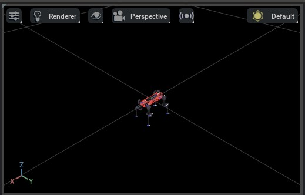
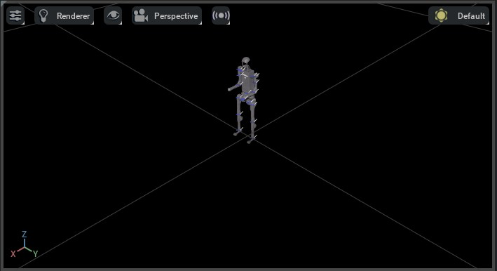
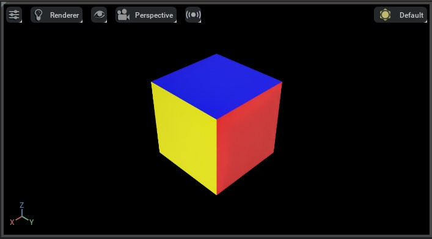

导入新资产#
NVIDIA Omniverse 依赖于通用场景描述（USD）文件格式来导入和导出资产。USD 是由皮克斯动画工作室开发的开源文件格式。这是一种针对大规模、复杂数据集进行优化的场景描述格式。虽然这种格式在电影和动画行业广泛使用，但在机器人社区中并不常见。
为此，NVIDIA 开发了多种导入器，将其他文件格式的资产转换为 USD。这些导入器可通过 Omniverse Kit 工作流使用；URDF/MJCF Python 导入器还可通过独立的 pip wheel 使用：
URDF 导入器 - 从 URDF 文件导入资产。
MJCF 导入器 - 从 MJCF 文件导入资产。
网格导入器 - 从各种文件格式（包括 OBJ、FBX、STL 和 glTF）导入资产。
NVIDIA 建议的工作流程是使用上述导入器将资产转换为其 USD 表示形式。一旦资产以 USD 格式存在，您可以使用 Omniverse Kit 对资产进行编辑，并将其导出到其他文件格式。Isaac Sim 默认包含这些导入程序。它们也可以在 Omniverse Kit 中手动启用。
安装完整运行时后，Isaac Lab 的 URDF 和 MJCF 转换工具会优先使用 Isaac Sim 的导入器 API。在不依赖 Kit 的环境中，则回退到下文 独立 URDF/MJCF 导入器 所述的独立导入器。Kit 可视化器和图形界面的导入对话框仍需要 Omniverse Kit 运行时。
用于大规模仿真中使用资产的重要注意事项是确保它们是 实例化 格式。这允许资产有效地加载到内存中，并在场景中多次使用。否则，资产将多次加载到内存中，可能导致性能问题。有关实例化资产的更多详细信息，请查看 Isaac Sim 文档 。
独立 URDF/MJCF 导入器#
URDF 和 MJCF 转换脚本无需 Isaac Sim 即可运行。独立导入器是可选组件；运行脚本前，按照 安装 importers 可选依赖组 中的 isaaclab[importers] 命令安装。也可传入 --viz newton_gl （或 rerun / viser ），在不依赖 Kit 的 Isaac Lab 可视化器中预览转换后的资产：
uv run --extra importers isaaclab -p scripts/tools/convert_urdf.py \
path/to/robot.urdf path/to/output_dir --merge_joints
uv run --extra importers isaaclab -p scripts/tools/convert_mjcf.py \
path/to/model.xml path/to/output.usd --merge_mesh
如果同一环境已安装 Isaac Sim，Isaac Lab 会优先使用 Isaac Sim 导入器扩展。只有完整 Isaac Sim 运行时不可用时，才使用独立 wheel。
多后端资产#
转换后的资产可同时包含共享 USD 物理属性和后端专用属性。Isaac Sim 6.1 的独立 URDF、MJCF 导入器会生成分层输出，例如：
robot_name.usda interface USD and Physics variant selection
payloads/base.usda composed asset
payloads/instances.usda reusable geometry
payloads/Physics/physics.usda shared physics and compatible backend attributes
额外的物理层取决于源资产和导入器版本。名为 physx.usda 或 mujoco.usda 的层，本身并不意味着存在同名变体。请求后端专用变体前，应检查接口 USD 的 Physics 变体集。
physics_variant 默认值为 physics 。经测试的 Isaac Sim 6.1 输出提供 physics 和 none ； none 不加载物理载荷。Isaac Lab 会显式选择请求的变体，如果资产具有 Physics 变体集却没有该变体，则报错。不要假设每个转换后的资产都可选择 physx 或 mujoco 。
默认启用的 run_multi_physics_conversion 要求导入器转换受支持的后端专用物理属性。这并不保证求解器行为等价，也不保证所有源格式功能都受支持。应在目标物理后端验证质量、惯量、碰撞和关节控制。
设置 run_asset_transformer=False 时，经测试的转换器会生成不含 Physics 变体集的扁平输出。Isaac Lab 保持这种输出不变，不选择变体。对于已有分层资产， variants 可在生成时覆盖可用的变体选择。根据 选择共享设置与后端专用设置 ，为所选后端选择配置覆盖项。
使用 URDF 导入器#
要在 GUI 中使用 URDF 导入器，请查阅 URDF 导入器 的文档。要在 Python 脚本中使用 URDF 导入器，我们提供了一个名为 convert_urdf.py 的实用工具。这个脚本创建了 UrdfConverterCfg 的一个实例，然后将其传递给 UrdfConverter 类。
备注
Isaac Sim 6 将 URDF 导入器升级到 3.0，以 Python 管线（ urdf-usd-converter ）取代旧的 C++ 绑定 API。现在默认将资产设为可实例化， make_instanceable 不再是配置选项。完整的不兼容变更见 迁移到 3.0 。
URDF 导入器提供多种配置参数以控制导入行为。默认值由 UrdfConverterCfg 指定，下文列出相关参数。部分常用设置可在调用 convert_urdf.py 时通过命令行传入，并以 * 标记。完整参数列表见 URDF 导入器 文档。
关节体与关节结构#
fix_base* — 是否固定机器人基座，取决于机器人采用浮动基座还是固定基座。命令行标志为--fix_base；设置后导入器会固定基座，否则默认采用浮动基座。merge_fixed_joints* — 是否合并固定关节。通常应设为True，以降低资产复杂度。命令行标志为--merge_joints；设置后导入器会合并固定关节，否则默认不合并。joint_drive- 机器人关节驱动的配置。drive_type- 关节的驱动类型。这个值可以是"acceleration"或"force"。我们推荐在大多数情况下使用"force"。target_type- 关节的目标类型。可以是"none"、"position"或"velocity"。我们建议在大多数情况下使用"position"。将其设置为"none"将禁用驱动并将关节增益设置为 0.0。gains- 关节的驱动刚度和阻尼增益。我们支持两种设置增益的方式:PDGainsCfg— 直接设置刚度和阻尼。stiffness与damping均接受单个浮点数，并统一应用。NaturalFrequencyGainsCfg— 根据系统期望的固有频率响应设置增益。 在 URDF 导入器 3.0 中已弃用 ，请改用PDGainsCfg。
几何、碰撞与材料#
collision_from_visuals— 当连杆未显式定义<collision>时，是否从可视几何创建碰撞几何。默认值为False。collision_type— 碰撞形状的简化方式。可选"Convex Hull"（默认，凸包）、"Convex Decomposition"（凸分解）、"Bounding Sphere"（包围球）或"Bounding Cube"（包围立方体）。self_collision— 是否启用关节体各连杆间的自碰撞。默认值为False。merge_mesh— 是否尽可能合并网格，以优化模型。默认值为False。link_density— 缺少<inertial>属性的连杆所用默认密度，单位为kg/m^3。0.0（默认值）表示保持密度不变。
资产路径解析与输出#
ros_package_paths— ROS 包名称与路径的映射列表，用于解析 URDF 中的package://URL。每项是包含name和path键的字典。robot_type— USD 机器人模式应用的机器人类型。默认值为"Default"。可选值为"Default"、"End Effector"、"Manipulator"、"Humanoid"、"Wheeled"、"Holonomic"、"Quadruped"、"Mobile Manipulators"或"Aerial"。run_asset_transformer— 运行资产转换处理，将扁平 USD 转换为分层 USD（接口 USD 与载荷）。默认值为True。run_multi_physics_conversion— 除 PhysX 属性外，同时输出兼容 MuJoCo 的关节属性，使资产支持两个后端。默认值为True。参见 多后端资产 。debug_mode— 在输出 USD 旁写入中间转换产物，便于检查。默认值为False。
已弃用（在 URDF 导入器 3.0 中不生效）#
以下选项为向后兼容而保留，但 URDF 导入器 3.0 会忽略它们。设置时会记录警告。
root_link_name— 以前用于放置 PhysX 关节体根的连杆。convert_mimic_joints_to_normal_joints— 转换时将 mimic 关节转换为普通关节。replace_cylinders_with_capsules— 转换时用胶囊形状替换圆柱形状。
有关配置参数的详细信息，请查阅 UrdfConverterCfg 文档。
示例用法#
在此示例中，我们使用了 ANYmal-D 机器人的经过处理的 URDF 文件。要检查经过处理的 URDF，请查看文件 anymal.urdf 。经过处理的 URDF 与原始 URDF 之间的主要区别在于:
我们从 URDF 中移除了
<gazebo>标记。此标记不受 URDF 导入器支持。我们从 URDF 中移除了
<transmission>标记。此标记不受 URDF 导入器支持。我们从 URDF 中移除了各种碰撞体，以减少资产的复杂性。
我们将所有关节的阻尼与摩擦参数设为
0.0。在 PhysX 中，这可避免导入的驱动自身添加阻尼，使我们能够对关节进行驱动力控制。Newton 则由执行器配置决定目标模式，参见 各物理后端的关节驱动 。URDF 导入器 3.0 不再支持
<dont_collapse>标签。固定关节合并现在是 Python 预处理步骤；启用merge_fixed_joints后，会合并所有固定关节。如果需要保留某个固定关节，应完全禁用merge_fixed_joints，或修改 URDF，使用非固定关节类型，例如限位范围为零的旋转关节。
通过 --ros_package_path NAME PATH 映射 ROS 包目录，使导入器能够解析机器人的 package:// 网格引用，包括合并固定关节时的引用。
以下显示了克隆存储库并运行转换器的步骤:
# clone a repository with URDF files
git clone git@github.com:isaac-orbit/anymal_d_simple_description.git
# go to top of the Isaac Lab repository
cd IsaacLab
# run the converter
uv run --extra importers isaaclab -p scripts/tools/convert_urdf.py \
../anymal_d_simple_description/urdf/anymal.urdf \
source/isaaclab_assets/data/Robots/ANYbotics/ \
--merge_joints \
--ros_package_path anymal_d_simple_description ../anymal_d_simple_description \
--joint_stiffness 0.0 \
--joint_damping 0.0 \
--joint_target_type none \
--viz kit
:: clone a repository with URDF files
git clone git@github.com:isaac-orbit/anymal_d_simple_description.git
:: go to top of the Isaac Lab repository
cd IsaacLab
:: run the converter
uv run --extra importers isaaclab -p scripts\tools\convert_urdf.py ^
..\anymal_d_simple_description\urdf\anymal.urdf ^
source\isaaclab_assets\data\Robots\ANYbotics\ ^
--merge_joints ^
--ros_package_path anymal_d_simple_description ..\anymal_d_simple_description ^
--joint_stiffness 0.0 ^
--joint_damping 0.0 ^
--joint_target_type none ^
--viz kit
执行上述脚本，会在 source/isaaclab_assets/data/Robots/ANYbotics/anymal/ 目录中创建 USD 文件（子目录名称由 URDF 中的机器人名称自动生成）：
anymal.usda— 主资产文件。
备注
如果机器人专用子目录已存在，URDF 导入器会自动避免重名。如果改变配置后（例如切换 fix_base ）对同一 usd_dir 再次运行转换器，导入器会写入新的编号目录（ anymal_1/ 、 anymal_2/ 等），而不是覆盖原输出。 usd_path 指向导入器实际使用的目录。如果不希望旧目录在磁盘上累积，可手动删除，或清空 usd_dir 。
示例传入 --viz kit ，以在 Isaac Sim 视口中打开转换后的资产，这需要完整安装 Isaac Sim。要进行不依赖 Kit 的预览，可改用 --viz newton_gl 、 --viz rerun 或 --viz viser 。省略 --viz 时，转换完成后立即退出。
先在查看器中检查转换后的几何与关节体，再在目标仿真后端验证动力学。如果资产不稳定，检查自碰撞、质量、惯量和执行器增益。

使用 MJCF 导入器#
与 URDF 导入器类似，MJCF 导入器也有一个 GUI 界面。请查看 MJCF导入器 中的文档获取更多详细信息。要在 Python 脚本中使用 MJCF 导入器，我们提供了一个名为 convert_mjcf.py 的实用工具。该脚本创建了一个 MjcfConverterCfg 的实例，然后将其传递给 MjcfConverter 类。
导入器配置参数的默认值由 MjcfConverterCfg 指定，下文列出相关参数。部分常用设置可在调用 convert_mjcf.py 时通过命令行传入，并以 * 标记。完整参数列表见 MJCF 导入器 文档。
备注
Isaac Sim 5.0 重写了 MJCF 导入器，改用 mujoco-usd-converter 库。 import_sites 、 import_inertia_tensor 和 make_instanceable 等设置已不再需要，转换器会根据 MJCF 文件内容自动处理。
几何、碰撞与材料#
merge_mesh* — 是否尽可能合并网格，以优化模型。命令行标志为--merge_mesh。collision_from_visuals* — 是否从可视几何生成碰撞几何。命令行标志为--collision_from_visuals。collision_type* — 碰撞形状的简化方式。可选"Convex Hull"（默认，凸包）、"Convex Decomposition"（凸分解）、"Bounding Sphere"（包围球）或"Bounding Cube"（包围立方体）。命令行标志为--collision_type。self_collision* — 是否启用关节体各连杆间的自碰撞。命令行标志为--self_collision。
关节体与物理#
fix_base— 是否在世界与根刚体连杆之间添加固定关节。默认值为False。link_density— MJCF 中缺少<inertial>属性的连杆所用默认密度，单位为kg/m^3。0.0（默认值）表示保持密度不变。import_physics_scene* — 从 MJCF 文件导入重力、时间步长等物理场景属性。默认值为False。命令行标志为--import_physics_scene。
执行器覆盖配置#
MuJoCo 将执行器建模为仿射变换 tau = gain @ control + bias 。以下选项按执行器覆盖从 MJCF 解析的值，均默认为 None ，表示保留解析值。
override_gain_type— 覆盖执行器增益类型，例如"fixed"。override_bias_type— 覆盖执行器偏置类型，例如"affine"。override_gain_prm— 覆盖执行器增益参数数组。位置控制示例：[kp, 0, 0, 0, 0, 0, 0, 0, 0, 0]。override_bias_prm— 覆盖执行器偏置参数数组。位置控制示例：[0, -kp, -kd, 0, 0, 0, 0, 0, 0, 0]。
资产路径解析与输出#
robot_type— USD 机器人模式应用的机器人类型。默认值为"Default"。可选值为"Default"、"End Effector"、"Manipulator"、"Humanoid"、"Wheeled"、"Holonomic"、"Quadruped"、"Mobile Manipulators"或"Aerial"。run_asset_transformer— 运行资产转换处理，将扁平 USD 转换为分层 USD（接口 USD 与载荷）。默认值为True。run_multi_physics_conversion— 将兼容的 MuJoCo 属性（如执行器增益）转换为 PhysX 属性，使资产支持两个后端。注意，转换方向与 URDF 导入器相反。默认值为True。参见 多后端资产 。debug_mode— 在输出 USD 旁写入中间转换产物，便于检查。默认值为False。
配置参数的详细信息见 MjcfConverterCfg 文档。
示例用法#
在这个例子中，我们使用 Unitree 的 H1 人形机器人在 mujoco_menagerie 中的 MuJoCo 模型。
以下显示了克隆存储库并运行转换器的步骤:
# clone a repository with MJCF files
git clone git@github.com:google-deepmind/mujoco_menagerie.git
# go to top of the Isaac Lab repository
cd IsaacLab
# run the converter
uv run --extra importers isaaclab -p scripts/tools/convert_mjcf.py \
../mujoco_menagerie/unitree_h1/h1.xml \
source/isaaclab_assets/data/Robots/Unitree/h1.usd \
--merge_mesh \
--viz kit
:: clone a repository with MJCF files
git clone git@github.com:google-deepmind/mujoco_menagerie.git
:: go to top of the Isaac Lab repository
cd IsaacLab
:: run the converter
uv run --extra importers isaaclab -p scripts\tools\convert_mjcf.py ^
..\mujoco_menagerie\unitree_h1\h1.xml ^
source\isaaclab_assets\data\Robots\Unitree\h1.usd ^
--merge_mesh ^
--viz kit
执行上述脚本，会在 source/isaaclab_assets/data/Robots/Unitree/ 目录中创建 USD 文件：
h1.usd— 转换后的 USD 资产文件。
备注
如果机器人专用子目录已存在，MJCF 导入器会自动避免重名，与 URDF 导入器行为一致。如果改变配置后对同一 usd_dir 再次运行转换器，导入器会写入新的编号目录（ h1_1/ 、 h1_2/ 等），而不是覆盖原输出。 usd_path 指向导入器实际使用的目录。如果不希望旧目录在磁盘上累积，可手动删除，或清空 usd_dir 。
--viz 选项见 预览转换后的资产 。

各物理后端的关节驱动#
URDF 和 MJCF 导入器会将关节驱动写入 USD。后续如何解释这些驱动，取决于物理后端，以及是否由 Isaac Lab 执行器配置接管。（网格资产没有关节，因此不涉及这些设置。）
PhysX 以导入的 USD 驱动属性为起点。Isaac Lab 执行器配置可在仿真前覆盖增益与限制。上述 ANYmal 示例传入 --joint_stiffness 0.0 --joint_damping 0.0 --joint_target_type none ，使资产用于驱动力控制时，导入的驱动不会额外施加 PD 驱动力。
Newton 根据 Isaac Lab 执行器配置解析目标模式，而不是只依赖 USD。当关节体使用 Isaac Lab 执行器配置时，Newton 会在构建求解器前解析每个已配置关节的目标模式。对于 ImplicitActuatorCfg ，仅有刚度、仅有阻尼、两项增益都有，以及零增益配置，分别选择位置、速度、位置与速度组合，以及驱动力模式。增益为 None 时，保留对应的导入 USD 值。显式执行器配置使用驱动力模式，因为 Isaac Lab 会直接计算其驱动力。
未配置 Isaac Lab 执行器的关节保留导入的 USD 设置。因此，对于具有零增益 USD 驱动的资产，不再需要仅为让已配置关节在 Newton 中受到驱动而设置 ensure_drives_exist 。
如果工作流需要独立于 Isaac Lab 执行器配置写入占位驱动， ensure_drives_exist 仍然有用。启用后，它会在仿真启动前，为零增益驱动赋予极小的占位刚度（ 1e-3 ），确保导入模型中存在每个驱动。
使用网格导入器#
Omniverse Kit 包括使用 ASSIMP 库导入各种网格格式的资产的网格转换器工具（例如 OBJ、FBX、STL、glTF 等）。资产转换器工具作为 Omniverse Kit 的扩展提供。请查看 资产转换器 文档了解更多详细信息。然而，与 Isaac Sim 的 URDF 和 MJCF 导入器不同，资产转换器工具不支持创建实例化资产。这意味着如果在场景中多次使用资产，则资产将多次加载到内存中。
因此，我们包含一个名为 convert_mesh.py 的实用工具，它使用资产转换器工具导入资产，然后将其转换为实例化资产。在内部，此脚本创建了一个 MeshConverterCfg 的实例，然后将其传递给 MeshConverter 类。由于网格文件不包含任何物理信息，配置类接受不同的物理属性（如质量、碰撞形状等）作为输入。请查看 MeshConverterCfg 的文档了解更多详细信息。
示例用法#
我们使用一个立方体的 OBJ 文件来演示网格转换器的用法。以下显示了克隆存储库并运行转换器的步骤:
# clone a repository with mesh files
git clone git@github.com:NVIDIA-Omniverse/IsaacGymEnvs.git
# go to top of the Isaac Lab repository
cd IsaacLab
# run the converter
uv run isaaclab -p scripts/tools/convert_mesh.py \
../IsaacGymEnvs/assets/trifinger/objects/meshes/cube_multicolor.obj \
source/isaaclab_assets/data/Props/CubeMultiColor/cube_multicolor.usd \
--make-instanceable \
--collision-approximation convexDecomposition \
--mass 1.0 \
--viz kit
:: clone a repository with mesh files
git clone git@github.com:NVIDIA-Omniverse/IsaacGymEnvs.git
:: go to top of the Isaac Lab repository
cd IsaacLab
:: run the converter
uv run isaaclab -p scripts\tools\convert_mesh.py ^
..\IsaacGymEnvs\assets\trifinger\objects\meshes\cube_multicolor.obj ^
source\isaaclab_assets\data\Props\CubeMultiColor\cube_multicolor.usd ^
--make-instanceable ^
--collision-approximation convexDecomposition ^
--mass 1.0 ^
--viz kit
网格转换器需要 Isaac Sim。该命令将转换后的 USD 及其可实例化网格载荷写入 source/isaaclab_assets/data/Props/CubeMultiColor/ ，并打开 Isaac Sim 视口。选择资产后按 F ，可使视口对准它。省略 --viz kit 可在不打开预览的情况下转换。
如果您不设置
--mass标志，则不会向资产添加刚体属性。它将作为静态资产导入。设置
--collision-approximation none，可省略碰撞体属性。默认值为convexDecomposition，因此不传入此标志仍会创建碰撞几何。
